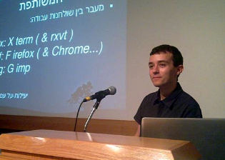

Daniel Chcouri
-
About
Welcome
Hi, I'm Daniel. Computer programming is my core competency, my work and my main interest. In my work I strive to keep the delicate balance between stability and agility. I'm always eager to expand my horizons with new challenges and technologies.My current project
I currently work as the head developer in a self-funded startup in its early stages. The startup aims to develop a new software as a service solution for the SEO market. I mainly develop the guts of the system's on Amazon EC2 using: node.js, express, mongoDB and some more technologies.
I am available for interesting part-time positions.
-
Resume/CV
My Resume
Started in 2008, my professional career covers various fields: Advanced Web Applications, Cloud Services (Amazon/Google), Social APIs (Facebook, Twitter), Widgets development, Web sites development, LAMP servers installations and configurations (both VPSs and locale), and more...skills
Technical Skills
The Vim editor and the Unix command line are the main tools I work with. I have extensive experience in all aspects of web-development (both server-side and client), high commitment to standards, and code history transparency (with git).
 Server side: Javascript (nodeJS), Python
Server side: Javascript (nodeJS), Python
Client side: HTML5, CSS3, Javascript (jQuery)
Development Tools: Git, VIM, Bash, GimpMy CV and professional profilesYou can also browse my working experience online using the arrows to the left and right
DOC (MS Office)
last update: 2013-04-26
 PDF (Acrobat Reader)
PDF (Acrobat Reader)
ODT (Open Office)
My Linkedin Profile
Stackoverflow Careers 2.0
Stackoveflow Profile
 GitHub Profile
GitHub Profile
Panel 2
Entrepreneur February 2013 - Present
Implementation of a software as a service for the SEO market
Technologies
NodeJS, ExpressJS, MongoDB, Amazon Web Service (EC2), lesscss, git, gnu make
Main Achievements
Implementing the API of an internet service using: Amazon EC2, Node.JS/Express and MongoDB.
The code is built with extensive unit-tests (based on QUnit), and a thorough API manual and documentation.
Panel 2
Razoss June 2010 - November 2012
Designed the architecture and implemented a user friendly extensible toolbars generator (like Wibiya/Conduit) in Goggle App Engine's cloud
Technologies
Python, Django, Facebook API, jQuery, google-app-engine, browsers-plugins, web-widgets, git, NodeJS, lesscss
Main Achievements
Developing a low-cost scalable analytics system.
Developing a secured users authentication system which isn't based on ssl (more details in my official CV).
The servers-side code designed to handle simple AJAX APIs and return JSONs. It helped to save cpu time (the browsers took care of the computational work that relates to templating), save bandwidth and extend the parts that can be handled by CDNs.
Extensible toolbars generator
Widgets development (jQuery, jQueryUI)
Panel 3
WhiteWeb March 2009 - June 2010
Implementing and maintaining Babylon's translation/dictionary sites
Technologies
php, python, redis, apache, mysql, bash, gettext, ajax, jquery, vim
Main Achievements
Rebuilding Babylon's online translation and online dictionary websites: both for product improvements and SEO improvements. See http://translation.babylon.com and http://dictionary.babylon.com
System administration of LAMP VPSes using SSH (CentOS and Ubuntu)
Developing JS based translation widget with different skins
Panel 4
Convertonet April 2008 - February 2009
Coding for the SEO Department
Technologies
php, python, redis, apache, mysql, bash, gettext, ajax, jquery, vim
Main Achievements
Process automation using GreaseMonkey based scripts
Implementing SEO changes on Casino.Com and Mansion Casino sites
Developing PHP-based tools in order to control and expand the peripheral SEO network of Mansion Team and Casino.Com sites
Developing scripts which automatically installed hundreds of Wordpress sites on VPSes and routinely added content to them
-
Contact
Contact
You are welcome to contact me